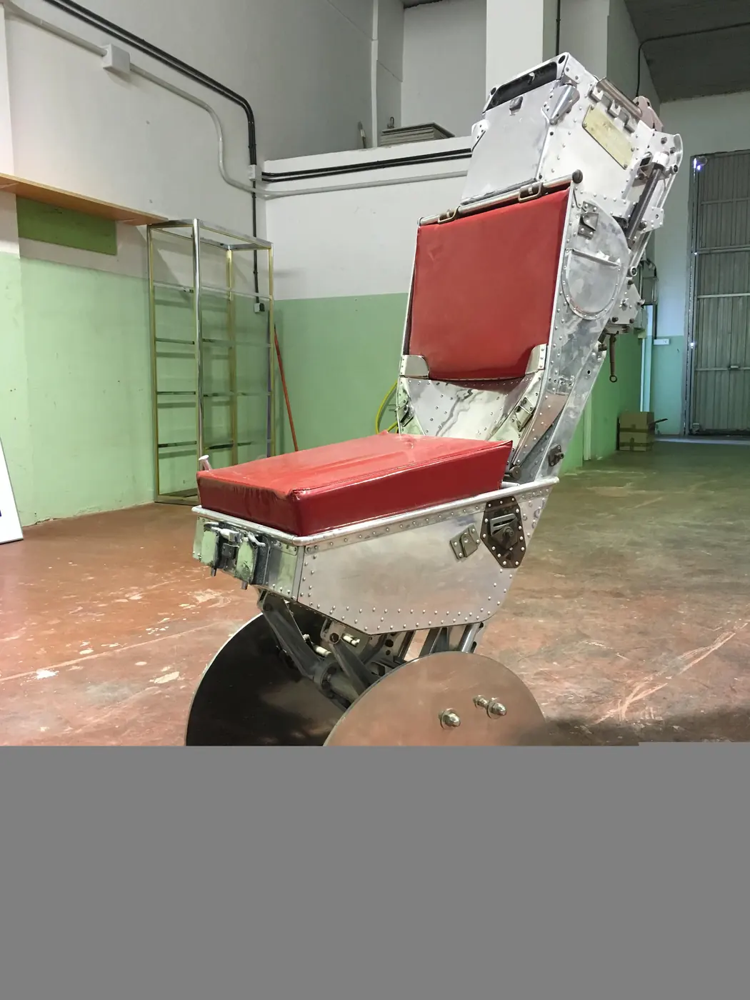

Asiento eyectable restaurado
La pieza más rotunda del taller. Estructura devuelta a su brillo original, mecanismos a la vista y tapicería rehecha en cuero rojo. Se sostiene de pie, se sienta de verdad y no hay forma de que pase desapercibida.
OrigenAviación militar
MaterialAluminio · cuero
EstadoRestaurado